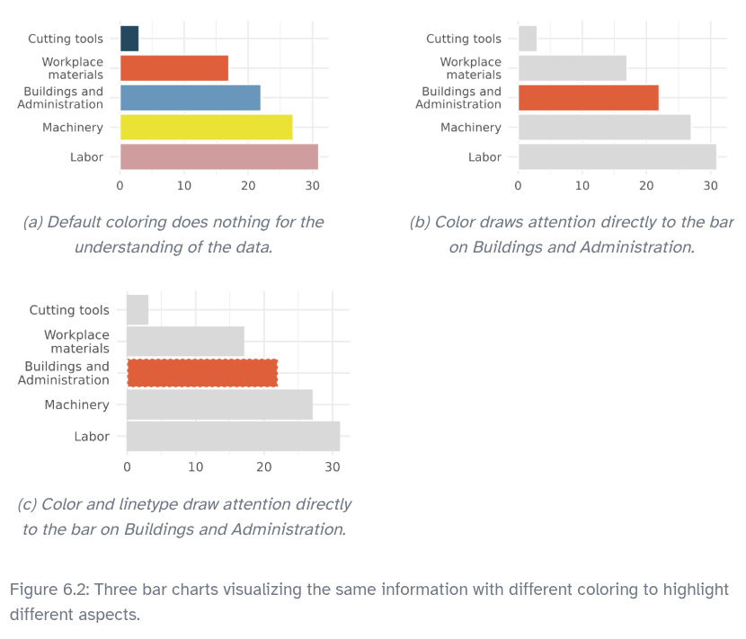
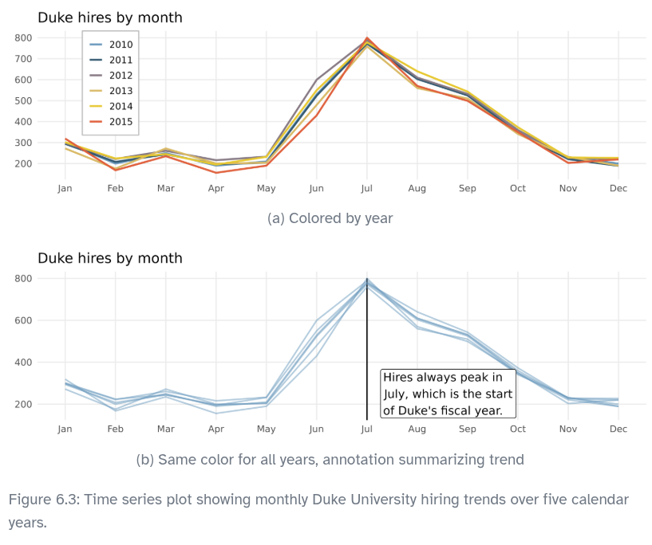
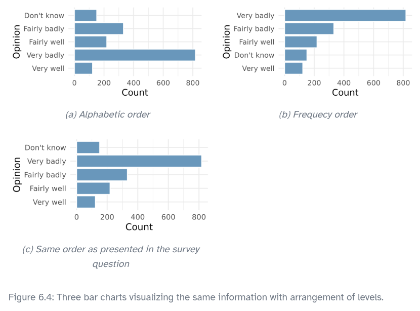
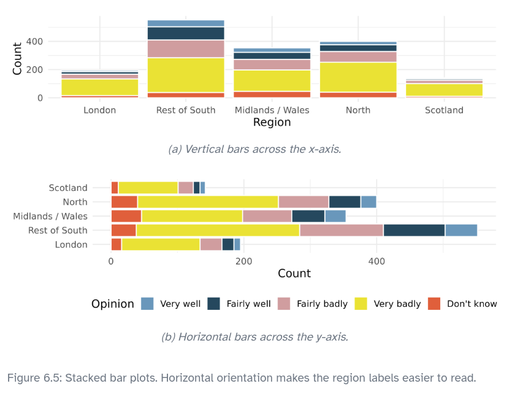
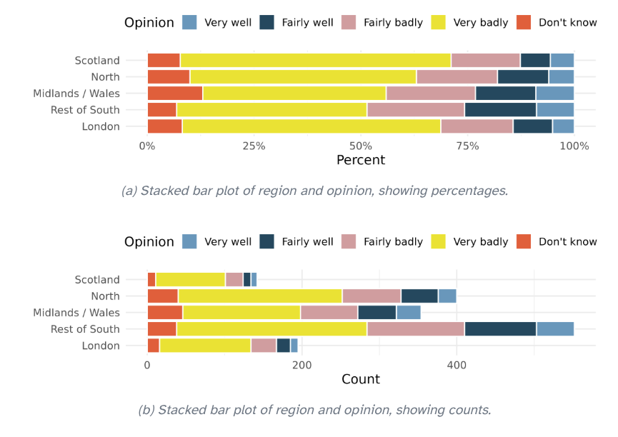
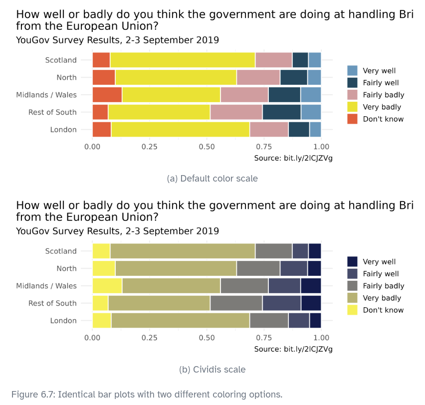

Effective communication of exploratory results
Graphs can powerfully communicate ideas directly and quickly. We all know, after all, that “a picture is worth 1000 words.” Unfortunately, however, there are times when an image conveys a message which is inaccurate or misleading.
This chapter focuses on how graphs can best be utilized to present data accurately and effectively. Along with data modeling, creative visualization is somewhat of an art. However, even with an art, there are recommended guiding principles. We provide a few best practices for creating data visualizations.
What’s wrong with the plot?
{kind=link}
1. Keep it simple
When creating a graphic, keep in mind what it is that you’d like your reader to see. Colors should be used to group items or differentiate levels in meaningful ways. Colors can be distracting when they are only used to brighten up the plot.
Consider a manufacturing company that has summarized its costs into five different categories. In the two graphics provided in Figure 6.1, notice that the magnitudes in the pie chart in Figure 6.1 (a) are difficult for the eye to compare. That is, can your eye tell how different “Buildings and administration” is from “Workplace materials” when looking at the slices of pie? Additionally, the colors in the pie chart do not mean anything and are therefore distracting. Lastly, the three-dimensional aspect of the image does not improve the reader’s ability to understand the data presented.
As an alternative, a bar plot is been provided in Figure 6.1 (b). Notice how much easier it is to identify the magnitude of the differences across categories while not being distracted by other aspects of the image. Typically, a bar plot will be easier for the reader to digest than a pie chart, especially if the categorical data being plotted has more than just a few levels.
{kind=link}
2. Use color to draw attention
There are many reasons why you might choose to add color to your plots. An important principle to keep in mind is to use color to draw attention. Of course, you should still think about how visually pleasing your visualization is, and if you’re adding color for making it visually pleasing without drawing attention to a particular feature, that might be fine. However, you should be critical of default coloring and explicitly decide whether to include color and how. Notice that in Figure 6.2 (b) the coloring is done in such a way to draw the reader’s attention to one particular piece of information. The default coloring in Figure 6.2 (a) can be distracting and makes the reader question, for example, is there something similar about the red and purple bars? Also note that not everyone sees color the same way, often it’s useful to add color and one more feature (e.g., pattern) so that you can refer to the features you’re drawing attention to in multiple ways, as shown in Figure 6.2 (c).

3. Tell a story
For many graphs, an important aspect is the inclusion of information which is not provided in the dataset that is being plotted. The external information serves to contextualize the data and helps communicate the narrative of the research.
In Figure 6.3, the graph on the right is annotated with information about the start of the university’s fiscal year which contextualizes the information provided by the data. Sometimes the additional information may be a diagonal line given by y = x, points above the line quickly show the reader which values have a coordinate larger than the coordinate; points below the line show the opposite.

4. Order matters
Most software programs have built in methods for some of the plot details – some order levels alphabetically, some provide functionality for arranging them in a custom order. As seen in Figure 6.4 (a), the alphabetical ordering isn’t particularly meaningful for describing the data. Sometimes it makes sense to order the bars from tallest to shortest (or vice versa), as shown in Figure 6.4 (b). But in this case, the best ordering is probably the one in which the questions were asked, as shown in Figure 6.4 (c). An ordering which does not make sense in the context of the problem (e.g., alphabetically here), can mislead the reader who might take a quick glance at the axes and not read the bar labels carefully.
In September 2019, YouGov survey asked 1,639 Great Britain adults the following question:
How well or badly do you think the government are doing at handling Britain’s exit from the European Union?
- Very well
- Fairly well
- Fairly badly
- Very badly
- Don’t know

5. Make the labels as easy to read as possible
The Brexit survey results were additionally broken down by region in Great Britain. The stacked bar plot allows for comparison of Brexit opinion across the five regions. In Figure 6.5 (a) the bars are vertical and in Figure 6.5 (b) they are horizontal. While the quantitative information in the two graphics is identical, flipping the graph and creating horizontal bars provides more space for the axis labels. The easier the categories are to read, the more the reader will learn from the visualization. Remember, the goal is to convey as much information as possible in a succinct and clear manner.

6. Pick a purpose
Every graphical decision should be made with a purpose. As previously mentioned, sticking with default options is not always best for conveying the narrative of your data story. Stacked bar plots tell one part of a story. Depending on your research question, they may not tell the part of the story most important to the research.
Figure 6.6 provides three different ways of representing the same information. If the most important comparison across regions is proportion, you might prefer Figure 6.6 (a). If the most important comparison across regions also considers the total number of individuals in the region, you might prefer Figure 6.6 (b). If a separate bar plot for each region makes the point you’d like, use Figure 6.6 (c), which has been faceted by region. Figure 6.6 (c) also provides full titles and a succinct URL with the data source. Other deliberate decisions to consider include using informative labels and avoiding redundancy.

{kind=link}
7. Select meaningful colors
One last consideration for building graphs is to consider color choices. Default or rainbow colors are not always the choice which will best distinguish the level of your variables. Much research has been done to find color combinations which are distinct and which are clear for differently sighted individuals. The cividis scale works well with ordinal data. (Nuñez, Anderton, and Renslow 2018) Figure 6.7 shows the same plot with two different color themes.

In this chapter different representations are contrasted to demonstrate best practices in creating graphs. The fundamental principle is that your graph should provide maximal information succinctly and clearly. Labels should be clear and oriented horizontally for the reader. Don’t forget titles and, if possible, include the source of the data.Qunatitative Perception
How do we percieve quantities as given by the plot properties?  Checkout the slide deck: Data Visualization Best Practices by Catherine Mulbrandon.
Checkout the slide deck: Data Visualization Best Practices by Catherine Mulbrandon.
For more details on properties of: color, style, size, text, checkout the Plot Properties | Seaborn
Great sites for selecting color schemes
- http://colorbrewer2.org
- https://coolors.co/
References: